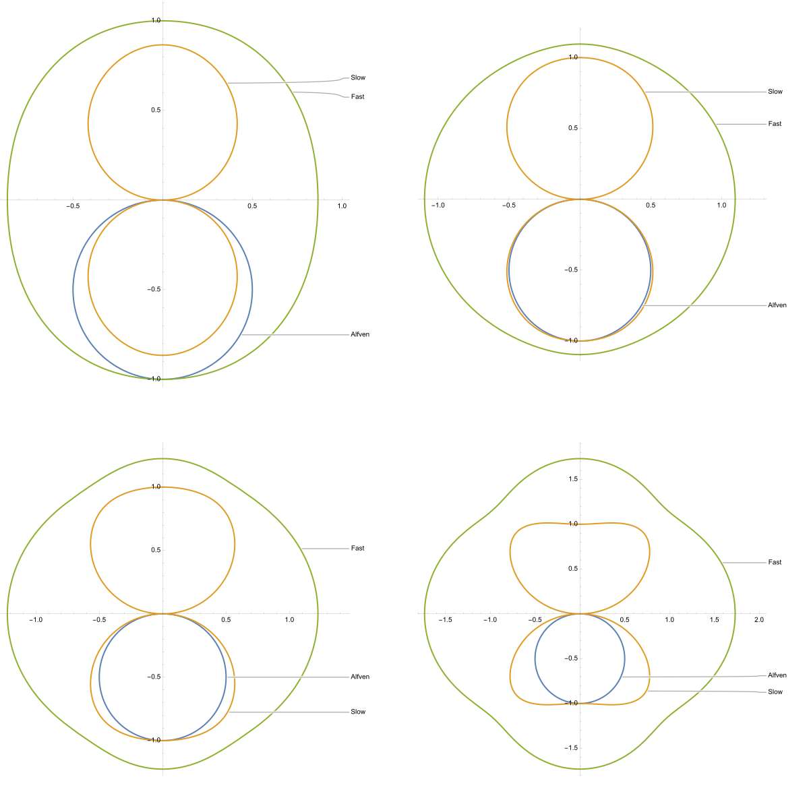
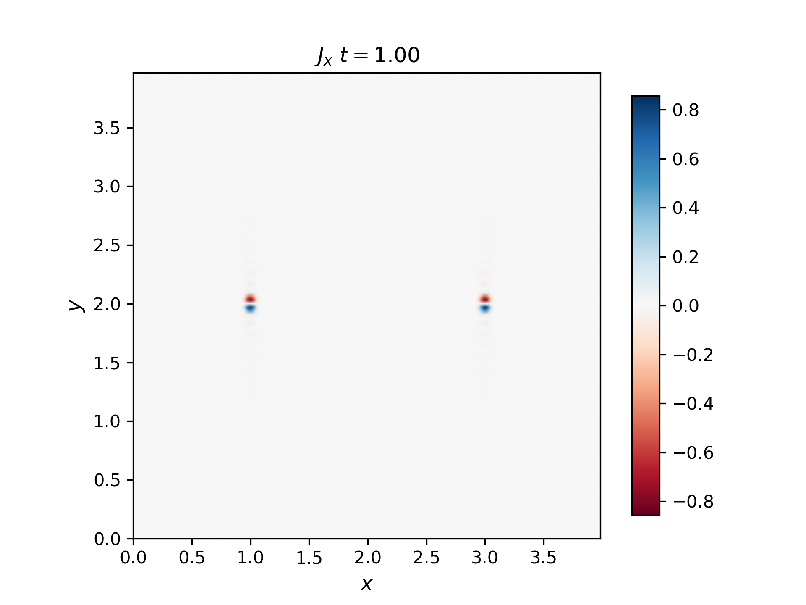
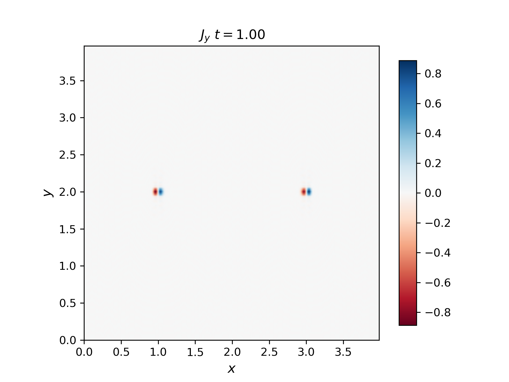
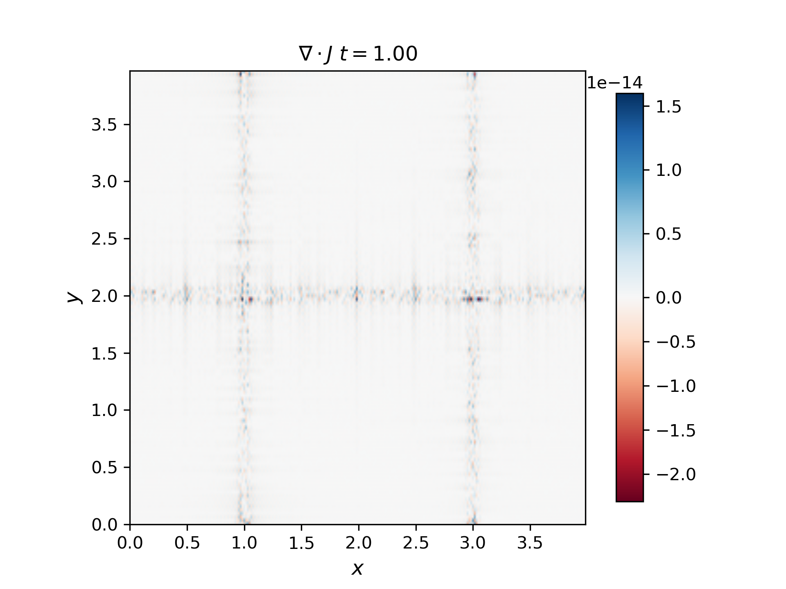
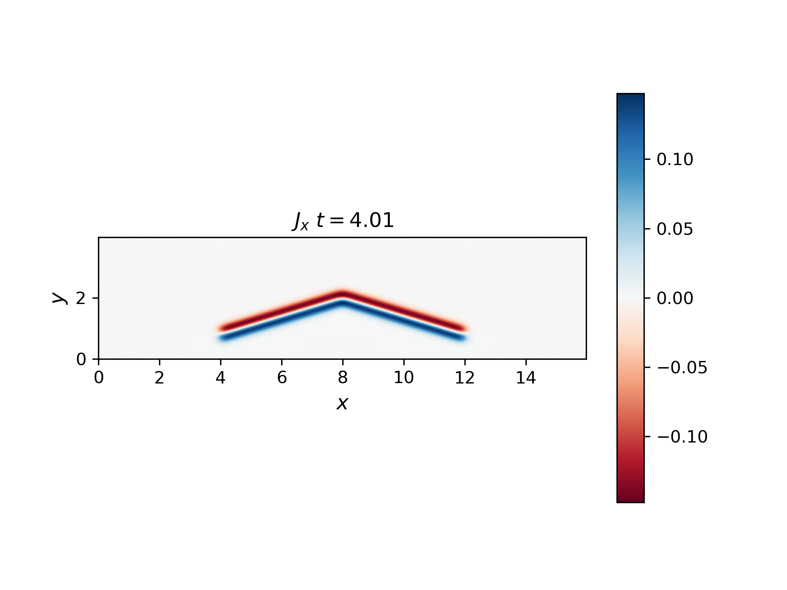
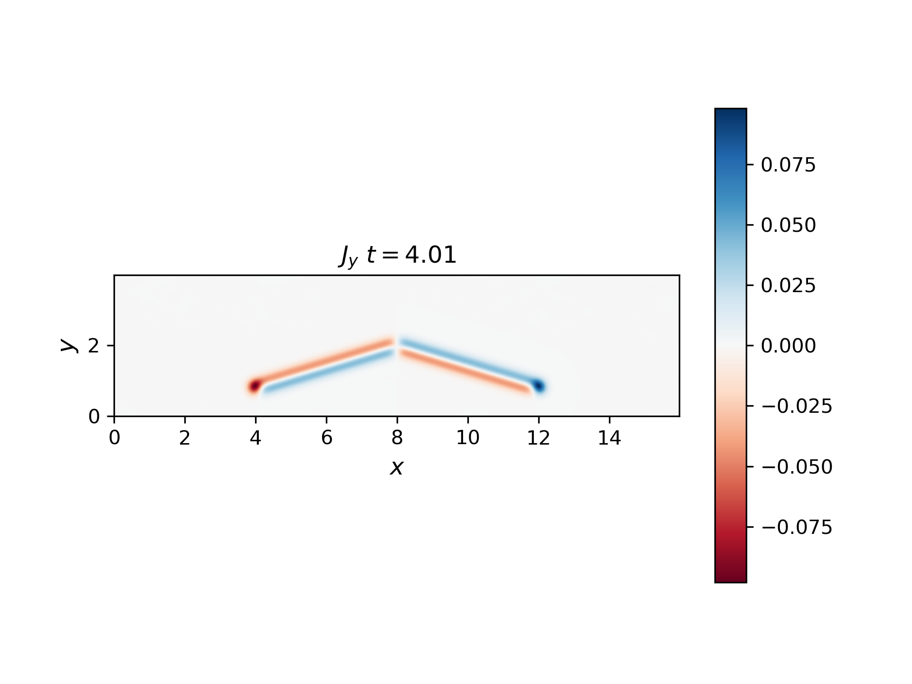

Homework 06
Problem 1
- Using equation IV.2 in Siscoe (the 3 components of the Euler equation, expressed in terms of \(δV\)) we derived the dispersion relation for double-adiabatic MHD. We derived the F,S wave dispersion relation in the notes (Lecture 15a; same as Siscoe IV.7). The Intermediate mode was derived earlier in the class as well, separately (Siscoe IV4). We did not solve the quadratic using the determinant.
- Express the 3 wave solutions in terms of \(ω^2\) (there is no need to simplify the R.H.S).
Wave solutions
The velocity perturbation is given by the following expression:
\[ \begin{aligned} \omega^2 \delta \vec{V} & =\left[C_{\perp}^2 k_x(\vec{k} \cdot \delta \vec{V})-C_{11}^2 k_x^2 \delta V_x\right] \hat{x} \\ & +\left[C_{ \pm}^2 k_x k_z \delta V_x+3 C_{11}^2 k_z^2 \delta V_z\right] \hat{z} \\ & +\xi_0 C_A^2\left[k^2 \delta V_x \hat{x}+k_z^2 \delta V_y \hat{y}\right] \end{aligned} \]
The three wave solutions are given by the following expressions:
Intermediate mode:
\[ \omega_i^2=\xi_0 C_A^2 k_z^2 \]
eqI := \[Omega]^2 - \[Xi]0 Ca^2 kz^2 == 0Fast and slow waves:
\[ \left(\omega_{f, s}^2-3 C_∥^2 k_z^2\right)\left[\omega_{f, s}^2-(2 C_⟂^2+C_∥^2) k_x^2-\xi_0 C_A^2 k_z^2\right]-C_⟂^4 k_x^2 k_z^2=0 \]
eqFS := (\[Omega]^2 -
3 Cparp^2 kz^2) (\[Omega]^2 - (2 Cperp^2 +
Cparp^2) kx^2 - \[Xi]0 Ca^2 kz^2) - Cperp^4 kx^2 kz^2 == 0Which gives:
\[ \omega ^4 + \omega ^2 \left(-\xi _0 C_A^2 k_z^2 - k_x^2 \left(C_\parallel^2 + 2 C_\perp^2\right)-3 C_\parallel^2 k_z^2\right)+3 \xi _0 C_A^2 C_\parallel^2 k_z^4+3 C_\parallel^2 k_x^2 k_z^2 \left(C_\parallel^2+2 C_\perp^2\right)-C_\perp^4 k_x^2 k_z^2=0 \]
in the form of a quadratic equation:
\[ (\omega^2)^2 + A \omega^2 + B = 0 \]
where:
\[ \begin{aligned} A &= -\xi_0 C_A^2 k_z^2 - k_x^2 \left(C_\parallel^2+2 C_\perp^2\right)-3 C_\parallel^2 k_z^2 \\ B &= 3 \xi_0 C_A^2 C_\parallel^2 k_z^4+3 C_\parallel^2 k_x^2 k_z^2 \left(C_\parallel^2+2 C_\perp^2\right)-C_\perp^4 k_x^2 k_z^2 \end{aligned} \]
So the solutions in terms of \(\omega^2\) are:
\[ \omega^2 = \frac{-A \pm \sqrt{A^2 - 4 B}}{2} \]
Friedriechs diagram
- Plot them in a polar diagram (Friedriechs diagram) and check that they agree with the polar diagrams shown in Notes 14a (last page). Use p|| = p⊥, for the unperturbed doubleadiabatic plasma, and β=0.5, 0.8, 1.0, and 2.0, as shown in the class notes.
Substitute the above values of \(A\) and \(B\) with \(k_x = k \cos(\theta)\) and \(k_z = k \sin(\theta)\):
rules = {kz -> k Cos[\[Theta]], kx -> k Sin[\[Theta]], Ca -> 1,
k -> 1};
cases = {Cperp -> Cparp, \[Xi]0 -> 1};
rules = Join[rules, cases];
Collect[eqFS //. rules /. notationRules, \[Omega]]In this case, the dispersion relation could be simplified to:
\[ \omega ^4 + \omega ^2 \left(-3 C_{\text{parp}}^2 \sin ^2(\theta )-3 C_{\text{parp}}^2 \cos ^2(\theta )-\cos ^2(\theta )\right)+3 C_{\text{parp}}^2 \cos ^4(\theta )+8 C_{\text{parp}}^4 \sin ^2(\theta ) \cos ^2(\theta )=0 \]
solsI = Solve[eqI, \[Omega]];
solsAll = Solve[eqFS, \[Omega]];
solsFS = {solsAll[[2]], solsAll[[4]]};
sols = Join[solsI, solsFS];
vp = Simplify[\[Omega]/k /. sols //. rules, k > 0];
ps = Table[
Block[{Cparp = Cparpi},
PolarPlot[Evaluate@vp, {\[Theta], 0, 2 \[Pi]}]
],
{Cparpi, {Sqrt[0.5/2], Sqrt[0.8/2], Sqrt[1/2], Sqrt[2/2]}}
]
SetDirectory@NotebookDirectory[];
Export["figures/polar_diagram.svg", GraphicsRow[ps]]
Comparison with isotropic MHD
- Why do you think the dispersion curves for the anisotropic MHD compressional modes are so different from the isotropic MHD ones, even when p|| = p⊥?
Basically this is because the scalar adiabatic relation is replaced by two separate adiabatic relations for aniostropic MHD. This two separate adiabatic relations have different coefficients for the parallel and perpendicular directions. And this leads to different dispersion relations for the compressional modes even when \(p_{\parallel} = p_{\perp}\).
Problem 2
The current of a moving Alfvén wave pulse closes in the pulse itself. You can see why in Siscoe equation III.44 (class notes Lecture 10a, Page 10) expressing \(δJ\) for an MHD wave: the Alfvén (I) mode has a parallel and a perpendicular current, \(div(J_I)=- i k J_I =0\). Use the MHD simulation to determine and plot Jy (the perpendicular current) either from (curlB)y or from dEy/dx (in simulation coordinates). Then also plot \(div(J_I)=∂J_x/∂x+∂J_y/∂y\) and show it is exactly zero. [In the ideal MHD and Hall MHD equations we ignore the displacement current and the space charge, so div(JI). [FYI: These corrections can become important when the electron inertial response or ion thermal motion become significant, causing an E|| in Ohm’s law, where (-VxB)||=(JxB)||=0
The current density in the x and y directions are plotted below:


The divergence of the current density is plotted below:

We can see that the divergence of the current density is exactly zero, which means that the current of a moving Alfvén wave pulse closes in the pulse itself.
Problem 3
Chen Shi modified his MHD code to accept a moving source of the dBz pulse (source moves in +y). The code is called “moving_source_code.zip” in the lecture notes. Run it and compute the parallel current Jx around this wing at time t=4.0. You will find the current moves towards the source in the upper-right part of the wing and away from the source in the upper-left. This is an apparent current (appearing to connect to the source): each Jx pulse is moving along the field, but contiguous pulses make it appear that the current continues all the way to the source.


We can see that current moves towards the source in the upper-right part of the wing with positive \(J_y\) and away from the source in the upper-left with negative \(J_y\). The current in y direction has the most intensity in the edge of the wing, which let the current close itself.